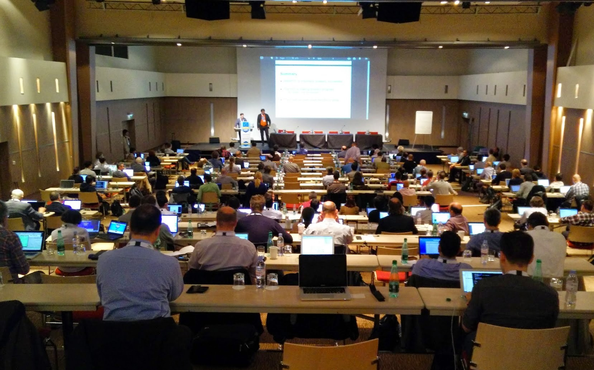

{kind=link}
Recommendations

Martin Alvarez-Espinar - W3C Offices
Feb 2019
Main objective: leading the Web to its full potential
Standards
+1000 Technical specifications, guidelines and tools for the Web:
Open standards with perhaps the most transparent patent policy on the Internet.
+450 organizations (public, private, academia) are part of W3C. All markets are represented.

Each Member organization appoints a representative for the W3C Advisory Committee
Different types of groups that develop technical work
They gather technology requirements and use cases on specific markets for subsequent standardization
Profile of participants: Technology specialist but business oriented
Develop technical standards (specifications)
Profile of participants: engineer/expert in the field
Group with +110 participants who gather requirements and use cases to improve Commerce on the Web for users, merchants, and other stakeholders
W3C Members in this group:
Airbnb, Alibaba Group,
American Express, Apple, AT&T, Blockstream, Bloomberg, C-DAC, Canadian Payments Association, CANTON CONSULTING, China Mobile Communications Corporation, Conexxus, Deque Systems, Deutsche Telekom, Digital Bazaar,
Discover Financial Services, ETRI, Federal Reserve Bank of Minneapolis,
FSTC (Financial Services Technology Consortium), Fujitsu Limited, Fundacion CTIC, DFKI, Google,
Groupement des Cartes Bancaires, GS1, Huawei, IBM, INRIA, Inswave Systems, Intel Corporation, International Forecourt Standards Forum, Intuit, ISO 20022 Registration Authority, JCB, Knowbility, Learning Machine, Lyra Network, Merchant
Advisory Group, Microsoft Corporation, Mozilla Foundation, NIC.br, Opera Software AS, Oracle Corporation, Orange,
PayGate, Pearson plc, Rakuten, Refinitiv, Ripple, Shopify, Spec-Ops, SPORTTOTAL, Standard Treasury, Tencent, Tyfone, Viacom,
Worldpay
+170 participants who develop standards to make payments easier and more secure on the Web.
W3C Members in this activity:
Abine, Airbnb, Alibaba Group,
American Express Company, Apple,
Bank of America,
Barclays, BarrierBreak Technologies, Blockstream, Bloomberg, BlueSnap, Bread, CANTON CONSULTING,
Capital One Financial, Center for Democracy and Technology, China Mobile Communications Corporation, Coil Technologies, Conexxus, ConsenSys, Department of Human Services, Deque Systems, Deutsche Telekom, Digital Bazaar, Discover Financial
Services, ETRI, Facebook,
Federal Reserve Bank of Minneapolis, Google, Groupement des Cartes Bancaires, GS1, HM Government, IBM Corporation, INCA Internet, INRIA, Inswave Systems, Intel Corporation, International Forecourt Standards Forum, ISO 20022 Registration
Authority, Klarna, Knowbility, LG Electronics, Lyra Network,
Mastercard, Merchant Advisory Group, Microsoft Corporation, Mozilla Foundation, NACHA - The Electronic Payments Association, NIC.br - Brazilian Network Information Center, Oath, Opera Software, Oracle Corporation, Orange,
PayCert,
PayGate, Rakuten, Reach, Ripple, Samsung Electronics, SEEROO Information, Shopify, Spec-Ops, Stripe, Telenor, Tencent, The Clearing House, The Paciello Group,
Visa,
Wells Fargo Bank, Wiley,
Worldpay
Each member may allocate unlimited participants to any group
* This may vary and there is no commitments. Only shown as reference

| Type of org. In Spain (HIC category) | Fee (€)* |
|---|---|
| Company with annual gross revenue >= €800m | 68,000 |
| Company with annual gross revenue €400m < €800m | 59,500 |
| Introductory Industry Membership (limited participation to one IG) | 29,750 |
| Company with annual gross revenue €51m < €400m | 21,200 |
| Rest of organizations, incl. public bodies and NGOs | 7,800 |
| Enterprises and NGOs (<= 10 employees and annual revenue < €2.25m, first two years) | 1,950 |
*Joining on Jan, 2019. See more details and up-to-date official fees.
Martin Alvarez-Espinar
Head of W3C Spain Office